299: Exampville Simulated Data¶
[1]:
import os
import matplotlib.pyplot as plt
import numpy as np
import pandas as pd
import geopandas as gpd
import networkx as nx
import larch
from more_itertools import pairwise
larch.__version__
[1]:
'5.3.5'
Welcome to Exampville, the best simulated town in this here part of the internet!
Exampville is provided with Larch, and uses the kind of data that a transportation planner might have available when building a travel model. However, this data is entirely fictional.
This page walks through the creation of this synthetic data.
[2]:
seed=0
np.random.seed(seed)
[3]:
import larch.exampville
Travel Analysis Zones¶
We start with a shape file delineating some travel analysis zones. (Five bonus points if you can identify the real American city from which these tract shapes were derived.)
[4]:
taz_shape = gpd.read_file("zip://"+larch.exampville.files.shapefile)
ax = taz_shape.plot(edgecolor='w', figsize=(10,10), cmap='tab20')
ax.set_xticks([])
ax.set_yticks([])
ax.set_frame_on(False)
# Put Zone labels in the meatiest part of the zone shape...
for idx, row in taz_shape.iterrows():
shrink = row['geometry']
while True:
try:
shrink1 = shrink.buffer(-5)
if shrink1.area <= 0:
break
else:
shrink = shrink1
except:
break
ax.annotate(
s=row['TAZ'],
xy=tuple(shrink.representative_point().coords)[0],
horizontalalignment='center',
verticalalignment='center',
)
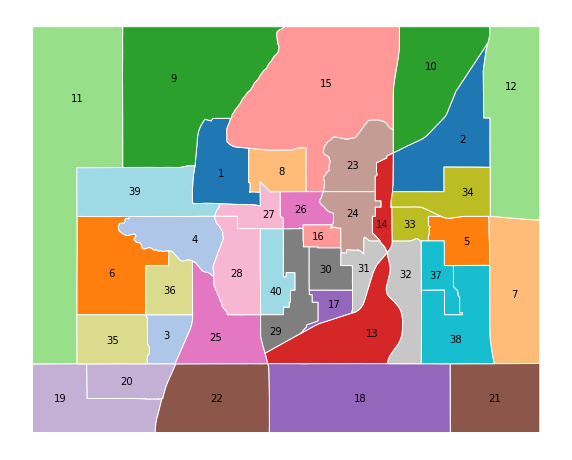
[5]:
higher_income_tazs = [2,33,34,5]
lower_income_tazs = [40,29,30,17,16]
[6]:
nZones = len(taz_shape)
[7]:
zones_cbd = [36]
zones_urb = [4,28,25,3,35,6]
Households¶
[8]:
n_hh = 5000
[9]:
### Group 1: In-town density
n_hh_1 = 3500
mean = [650, 400, 11, 0.35, 0.52]
i_y = 80
i_x = 100
v_y = -22
v_x = 10
s_x = 10
s_y = -22
s_v = 0.21
s_i = 0.1
cov = [
[44000, 25000, i_x, v_x, s_x],
[25000, 44000, i_y, v_y, s_y],
[ i_x, i_y, 1.0, 0.4, s_i],
[ v_x, v_y, 0.4, 0.35, s_v],
[ s_x, s_y, s_i, s_v, 0.35],
]
x, y, income, veh, hhsz = np.random.multivariate_normal(mean, cov, n_hh_1).T
# Assemble into a DataFrame
hh_locations = pd.DataFrame.from_dict({
'X':np.round(x,2),
'Y':np.round(y,2),
'INCOME':np.exp(income).astype(int),
'N_VEHICLES':np.exp(veh).astype(int),
'HHSIZE':np.exp(hhsz).astype(int)+1,
})
# Convert to a GeoDataFrame
hh_locations = gpd.GeoDataFrame(
hh_locations,
geometry=gpd.points_from_xy(hh_locations.X, hh_locations.Y),
crs={},
)
# Attach HOMETAZ, and drop points outside the region.
hh_locations = gpd.sjoin(hh_locations, taz_shape[['TAZ','geometry']], how='inner', op='within')
[10]:
hh_locations.HHSIZE.statistics(discrete=True)
[10]:
| key | value |
|---|---|
| n | 3169 |
| minimum | 1 |
| maximum | 11 |
| median | 2.0 |
| histogram | |
| mean | 2.4534553486904387 |
| stdev | 1.262786875252692 |
| zeros | 0 |
| positives | 3169 |
| negatives | 0 |
| nonzero_minimum | 1 |
| nonzero_maximum | 11 |
| nonzero_mean | 2.4534553486904387 |
| nonzero_stdev | 1.262786875252692 |
[11]:
pd.pivot_table(
hh_locations,
index='HHSIZE',
columns='N_VEHICLES',
aggfunc={'X':'size'},
).fillna(0).astype(int)
[11]:
| X | ||||||||||
|---|---|---|---|---|---|---|---|---|---|---|
| N_VEHICLES | 0 | 1 | 2 | 3 | 4 | 5 | 6 | 7 | 9 | 15 |
| HHSIZE | ||||||||||
| 1 | 363 | 220 | 29 | 2 | 0 | 0 | 0 | 0 | 0 | 0 |
| 2 | 402 | 712 | 202 | 45 | 10 | 3 | 0 | 0 | 0 | 0 |
| 3 | 75 | 330 | 164 | 60 | 23 | 10 | 4 | 1 | 0 | 0 |
| 4 | 15 | 123 | 99 | 42 | 28 | 9 | 3 | 1 | 0 | 0 |
| 5 | 1 | 37 | 29 | 25 | 8 | 1 | 5 | 1 | 1 | 0 |
| 6 | 0 | 7 | 18 | 12 | 7 | 3 | 0 | 0 | 0 | 0 |
| 7 | 2 | 5 | 3 | 5 | 0 | 1 | 0 | 1 | 0 | 0 |
| 8 | 0 | 2 | 2 | 2 | 1 | 1 | 1 | 0 | 0 | 1 |
| 9 | 0 | 0 | 4 | 2 | 2 | 1 | 1 | 0 | 0 | 0 |
| 10 | 0 | 0 | 1 | 0 | 0 | 0 | 0 | 0 | 0 | 0 |
| 11 | 0 | 0 | 0 | 0 | 0 | 1 | 0 | 0 | 0 | 0 |
[12]:
ax = taz_shape.plot(edgecolor='k', figsize=(10,10), color='w')
ax.set_xticks([])
ax.set_yticks([])
ax.set_frame_on(False)
hh_locations.plot(ax=ax, column='INCOME', alpha=1, cmap='Reds', vmax=150000);
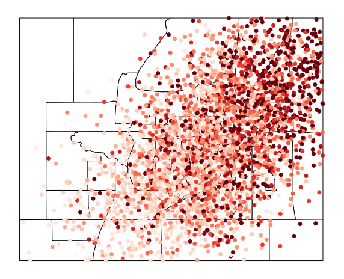
[13]:
ax = taz_shape.plot(edgecolor='k', figsize=(10,10), color='w')
ax.set_xticks([])
ax.set_yticks([])
ax.set_frame_on(False)
hh_locations.plot(ax=ax, column='N_VEHICLES', alpha=1, cmap='Reds', vmax=3);
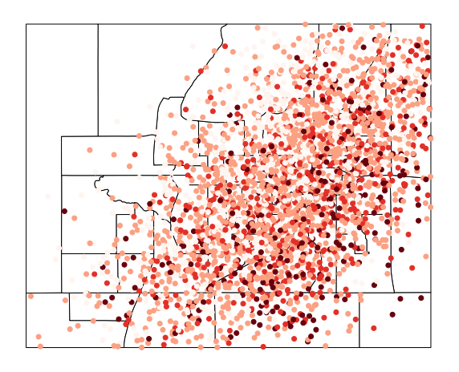
[14]:
hh_locations.INCOME.statistics()
[14]:
| key | value |
|---|---|
| n | 3169 |
| minimum | 1159 |
| maximum | 1495622 |
| median | 58545.0 |
| histogram | |
| mean | 94789.0766803408 |
| stdev | 118463.08967258588 |
| zeros | 0 |
| positives | 3169 |
| negatives | 0 |
| nonzero_minimum | 1159 |
| nonzero_maximum | 1495622 |
| nonzero_mean | 94789.0766803408 |
| nonzero_stdev | 118463.08967258588 |
[15]:
hh_locations.head()
[15]:
| X | Y | INCOME | N_VEHICLES | HHSIZE | geometry | index_right | TAZ | |
|---|---|---|---|---|---|---|---|---|
| 0 | 361.35 | 33.34 | 6026 | 1 | 4 | POINT (361.350 33.340) | 21 | 22 |
| 112 | 272.08 | 30.77 | 30538 | 0 | 1 | POINT (272.080 30.770) | 21 | 22 |
| 156 | 424.18 | 72.55 | 24131 | 1 | 1 | POINT (424.180 72.550) | 21 | 22 |
| 160 | 464.48 | 61.30 | 34838 | 1 | 2 | POINT (464.480 61.300) | 21 | 22 |
| 186 | 328.95 | 129.36 | 29337 | 0 | 1 | POINT (328.950 129.360) | 21 | 22 |
[16]:
#### Group 2: Regional base population
n_hh_2 = n_hh - len(hh_locations) # Enough to get back to the desired total
mean = [650, 400, 20000, 0.45, 0.52]
i_y = 0
i_x = 0
v_y = 0
v_x = 0
s_x = 0
s_y = 0
v_i = 846
s_v = 0.28
s_i = 600
cov = [
[44000, 0, i_x, v_x, s_x],
[ 0, 44000, i_y, v_y, s_y],
[ i_x, i_y,9000000, v_i, s_i],
[ v_x, v_y, v_i, 0.25, s_v],
[ s_x, s_y, s_i, s_v, 0.35],
]
[17]:
x2, y2, i2, v2, s2 = np.random.multivariate_normal(mean, cov, n_hh_2).T
x2 = np.random.random(n_hh_2)*1000
y2 = np.random.random(n_hh_2)*800
# i2 = np.exp(np.random.random(n_hh_2)*3+8).astype(int)
# v2 = np.exp(np.random.random(n_hh_2)*1.3)
# s2 = v2 + np.exp(np.random.random(n_hh_2)*0.3)
# Assemble into a DataFrame
hh_locations2 = pd.DataFrame.from_dict({
'X':np.round(x2,2),
'Y':np.round(y2,2),
'INCOME':(i2),
'N_VEHICLES':np.exp(v2).astype(int),
'HHSIZE':np.exp(s2).astype(int)+1,
})
# Convert to a GeoDataFrame
hh_locations2 = gpd.GeoDataFrame(
hh_locations2,
geometry=gpd.points_from_xy(hh_locations2.X, hh_locations2.Y),
crs={},
)
# Attach HOMETAZ
hh_locations2 = gpd.sjoin(hh_locations2, taz_shape[['TAZ','geometry']], how='inner', op='within')
[18]:
hh_locations2.head()
[18]:
| X | Y | INCOME | N_VEHICLES | HHSIZE | geometry | index_right | TAZ | |
|---|---|---|---|---|---|---|---|---|
| 0 | 266.54 | 78.10 | 21851.702304 | 1 | 2 | POINT (266.540 78.100) | 21 | 22 |
| 10 | 284.48 | 123.81 | 22175.696585 | 1 | 2 | POINT (284.480 123.810) | 21 | 22 |
| 19 | 329.07 | 93.00 | 23665.459873 | 4 | 6 | POINT (329.070 93.000) | 21 | 22 |
| 26 | 350.79 | 133.95 | 20651.496338 | 1 | 3 | POINT (350.790 133.950) | 21 | 22 |
| 41 | 392.46 | 100.41 | 15006.766402 | 1 | 2 | POINT (392.460 100.410) | 21 | 22 |
[19]:
hh_locations2.INCOME.statistics()
[19]:
| key | value |
|---|---|
| n | 1831 |
| minimum | 9091.694830180175 |
| maximum | 30655.565862265605 |
| median | 20061.641663502065 |
| histogram | |
| mean | 20051.44933225138 |
| stdev | 2994.003712899102 |
| zeros | 0 |
| positives | 1831 |
| negatives | 0 |
| nonzero_minimum | 9091.694830180175 |
| nonzero_maximum | 30655.565862265605 |
| nonzero_mean | 20051.44933225138 |
| nonzero_stdev | 2994.003712899102 |
[20]:
hh_locations2.N_VEHICLES.statistics(discrete=True)
[20]:
| key | value |
|---|---|
| n | 1831 |
| minimum | 0 |
| maximum | 11 |
| median | 1.0 |
| histogram | |
| mean | 1.2790824685963955 |
| stdev | 1.0267819582622217 |
| zeros | 327 |
| positives | 1504 |
| negatives | 0 |
| nonzero_minimum | 1 |
| nonzero_maximum | 11 |
| nonzero_mean | 1.5571808510638299 |
| nonzero_stdev | 0.9222004958396711 |
[21]:
hh_locations2.corr()
[21]:
| X | Y | INCOME | N_VEHICLES | HHSIZE | index_right | TAZ | |
|---|---|---|---|---|---|---|---|
| X | 1.000000 | -0.018466 | -0.012184 | -0.000933 | 0.023437 | 0.042336 | 0.042336 |
| Y | -0.018466 | 1.000000 | -0.000632 | 0.006702 | 0.010311 | -0.335959 | -0.335959 |
| INCOME | -0.012184 | -0.000632 | 1.000000 | 0.505674 | 0.296677 | -0.006175 | -0.006175 |
| N_VEHICLES | -0.000933 | 0.006702 | 0.505674 | 1.000000 | 0.889067 | 0.000554 | 0.000554 |
| HHSIZE | 0.023437 | 0.010311 | 0.296677 | 0.889067 | 1.000000 | -0.003713 | -0.003713 |
| index_right | 0.042336 | -0.335959 | -0.006175 | 0.000554 | -0.003713 | 1.000000 | 1.000000 |
| TAZ | 0.042336 | -0.335959 | -0.006175 | 0.000554 | -0.003713 | 1.000000 | 1.000000 |
[22]:
#### Merge Groups
HH = pd.concat([hh_locations, hh_locations2], sort=False)
# Clean up
HH = HH.reset_index(drop=True)
HH.rename({'TAZ':'HOMETAZ'}, axis=1, inplace=True)
HH.drop('index_right', axis=1, inplace=True)
# Add HH size and ID
# HH['HHSIZE'] = (np.floor(
# np.random.binomial(5, 0.3, [n_hh, ])
# + 1
# + np.random.random([n_hh, ])
# )).astype(int)
#np.floor(np.random.exponential(0.8, [n_hh, ]) + 1 + np.random.random([n_hh, ])).astype(int)
HH['HHID'] = HH.index + 50000
[23]:
HH.head()
[23]:
| X | Y | INCOME | N_VEHICLES | HHSIZE | geometry | HOMETAZ | HHID | |
|---|---|---|---|---|---|---|---|---|
| 0 | 361.35 | 33.34 | 6026.0 | 1 | 4 | POINT (361.350 33.340) | 22 | 50000 |
| 1 | 272.08 | 30.77 | 30538.0 | 0 | 1 | POINT (272.080 30.770) | 22 | 50001 |
| 2 | 424.18 | 72.55 | 24131.0 | 1 | 1 | POINT (424.180 72.550) | 22 | 50002 |
| 3 | 464.48 | 61.30 | 34838.0 | 1 | 2 | POINT (464.480 61.300) | 22 | 50003 |
| 4 | 328.95 | 129.36 | 29337.0 | 0 | 1 | POINT (328.950 129.360) | 22 | 50004 |
[24]:
# HH.index = HH['HHID']
HH['HHSIZE'].statistics(discrete=True)
[24]:
| key | value |
|---|---|
| n | 5000 |
| minimum | 1 |
| maximum | 22 |
| median | 2.0 |
| histogram | |
| mean | 2.4698 |
| stdev | 1.314034991923731 |
| zeros | 0 |
| positives | 5000 |
| negatives | 0 |
| nonzero_minimum | 1 |
| nonzero_maximum | 22 |
| nonzero_mean | 2.4698 |
| nonzero_stdev | 1.314034991923731 |
[25]:
HH['INCOME'].statistics()
[25]:
| key | value |
|---|---|
| n | 5000 |
| minimum | 1159.0 |
| maximum | 1495622.0 |
| median | 27261.06802456764 |
| histogram | |
| mean | 67420.15754547046 |
| stdev | 100966.07139915966 |
| zeros | 0 |
| positives | 5000 |
| negatives | 0 |
| nonzero_minimum | 1159.0 |
| nonzero_maximum | 1495622.0 |
| nonzero_mean | 67420.15754547046 |
| nonzero_stdev | 100966.07139915966 |
[26]:
HH.info()
<class 'geopandas.geodataframe.GeoDataFrame'>
RangeIndex: 5000 entries, 0 to 4999
Data columns (total 8 columns):
# Column Non-Null Count Dtype
--- ------ -------------- -----
0 X 5000 non-null float64
1 Y 5000 non-null float64
2 INCOME 5000 non-null float64
3 N_VEHICLES 5000 non-null int64
4 HHSIZE 5000 non-null int64
5 geometry 5000 non-null geometry
6 HOMETAZ 5000 non-null int64
7 HHID 5000 non-null int64
dtypes: float64(3), geometry(1), int64(4)
memory usage: 312.6 KB
[27]:
ax = taz_shape.plot(edgecolor='k', figsize=(10,10), color='w')
ax.set_xticks([])
ax.set_yticks([])
ax.set_frame_on(False)
HH.plot(ax=ax, color='red', alpha=0.25);
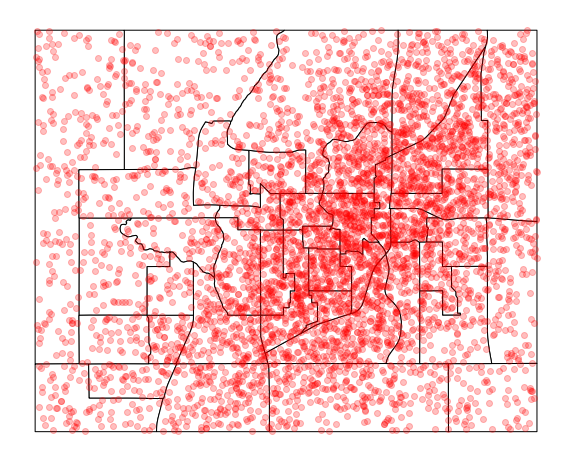
People¶
[28]:
HHsize = HH['HHSIZE']
n_PER = np.sum(HHsize)
PER = {}
PERidx = PER['idx'] = np.arange(n_PER, dtype=np.int64)
PERid = PER['PERSONID'] = np.asarray([60000 + i for i in PER['idx']])
PERhhid = PER['HHID'] = np.zeros(n_PER, dtype=np.int64)
PERhhidx = PER['HHIDX'] = np.zeros(n_PER, dtype=np.int64)
PERage = PER['AGE'] = np.zeros(n_PER, dtype=np.int64)
n2 = 0
for n1 in range(n_hh):
PER['HHID'][n2:(n2 + HHsize[n1])] = HH['HHID'][n1]
PER['HHIDX'][n2:(n2 + HHsize[n1])] = HH.index[n1]
PER['AGE'][n2] = int(np.random.random() * 67 + 18)
if HHsize[n1]>1:
nphh = HHsize[n1]-1
PER['AGE'][n2+1:n2+1+nphh] = (np.random.random(nphh) * 80 + 5).astype(np.int64)
n2 += HHsize[n1]
PERworks = PER['WORKS'] = ((np.random.random(n_PER) > 0.15) & (PERage > 16) & (PERage < 70)).astype(np.int64)
PER = pd.DataFrame.from_dict(PER)
PER.drop('idx', axis=1, inplace=True)
[29]:
PER['AGE'].statistics()
[29]:
| key | value |
|---|---|
| n | 12349 |
| minimum | 5 |
| maximum | 84 |
| median | 48.0 |
| histogram | |
| mean | 47.22916835371285 |
| stdev | 21.846714300032925 |
| zeros | 0 |
| positives | 12349 |
| negatives | 0 |
| nonzero_minimum | 5 |
| nonzero_maximum | 84 |
| nonzero_mean | 47.22916835371285 |
| nonzero_stdev | 21.846714300032925 |
[30]:
HH.head()
[30]:
| X | Y | INCOME | N_VEHICLES | HHSIZE | geometry | HOMETAZ | HHID | |
|---|---|---|---|---|---|---|---|---|
| 0 | 361.35 | 33.34 | 6026.0 | 1 | 4 | POINT (361.350 33.340) | 22 | 50000 |
| 1 | 272.08 | 30.77 | 30538.0 | 0 | 1 | POINT (272.080 30.770) | 22 | 50001 |
| 2 | 424.18 | 72.55 | 24131.0 | 1 | 1 | POINT (424.180 72.550) | 22 | 50002 |
| 3 | 464.48 | 61.30 | 34838.0 | 1 | 2 | POINT (464.480 61.300) | 22 | 50003 |
| 4 | 328.95 | 129.36 | 29337.0 | 0 | 1 | POINT (328.950 129.360) | 22 | 50004 |
[31]:
n_veh = HH[['N_VEHICLES', 'INCOME']]
n_veh.index = HH.HHID
PER = pd.merge(PER, n_veh, left_on='HHID', right_index=True)
[32]:
vcounts = PER.N_VEHICLES.value_counts().sort_index()
vcounts
[32]:
0 1855
1 5374
2 2965
3 1199
4 528
5 239
6 120
7 19
9 20
11 22
15 8
Name: N_VEHICLES, dtype: int64
[33]:
PER.N_VEHICLES.statistics(discrete=True)
[33]:
| key | value |
|---|---|
| n | 12349 |
| minimum | 0 |
| maximum | 15 |
| median | 1.0 |
| histogram | |
| mean | 1.587415985100008 |
| stdev | 1.3546955271124952 |
| zeros | 1855 |
| positives | 10494 |
| negatives | 0 |
| nonzero_minimum | 1 |
| nonzero_maximum | 15 |
| nonzero_mean | 1.8680198208500096 |
| nonzero_stdev | 1.2788395049811396 |
[34]:
PERnworktours = np.zeros_like(PERage)
PERnothertours = np.zeros_like(PERage)
i = 0
for nv,nt in vcounts.items():
if nv==0:
work_rates, other_rates = [0.25, 0.70, 0.04, 0.01], [0.74, 0.2, 0.05, 0.01]
elif nv==1:
work_rates, other_rates = [0.13, 0.74, 0.09, 0.04], [0.2, 0.5, 0.2, 0.1]
elif nv==2:
work_rates, other_rates = [0.10, 0.70, 0.17, 0.03], [0.1, 0.5, 0.3, 0.1]
elif nv==3:
work_rates, other_rates = [0.07, 0.61, 0.26, 0.06], [0.1, 0.4, 0.3, 0.2]
else:
work_rates, other_rates = [0.05, 0.53, 0.33, 0.09], [0.1, 0.3, 0.4, 0.2]
work_rates = np.array(work_rates)
other_rates = np.array(other_rates)
for income_under, income_over in pairwise([np.inf, 150_000, 120_000, 90_000, 60_000, 30_000, -np.inf]):
PERv = (PER.N_VEHICLES == nv) & (PER.INCOME>=income_over) & (PER.INCOME<income_under)
if income_over == 150_000:
work_rates_ = work_rates + np.array([-0.04, -0.10, 0.10, 0.04])
other_rates_ = other_rates + np.array([-0.07, -0.13, 0.13, 0.07])
elif income_over == 120_000:
work_rates_ = work_rates + np.array([-0.03, -0.08, 0.08, 0.03])
other_rates_ = other_rates + np.array([-0.05, -0.1, 0.13, 0.02])
elif income_over == 90_000:
work_rates_ = work_rates + np.array([-0.02, -0.06, 0.07, 0.01])
other_rates_ = other_rates + np.array([-0.03, -0.07, 0.08, 0.02])
elif income_over == 60_000:
work_rates_ = work_rates + np.array([-0.01, -0.04, 0.05, 0.0])
other_rates_ = other_rates + np.array([-0.02, -0.03, 0.04, 0.01])
elif income_over == 30_000:
work_rates_ = work_rates
other_rates_ = other_rates
else:
work_rates_ = work_rates + np.array([0.1, 0.05, -0.05, -0.1])
other_rates_ = other_rates + np.array([0.2, 0.05, -0.05, -0.2])
j = sum(PERv)
work_rates_[work_rates_<0.0001] = 0.0001
work_rates_ /= work_rates_.sum()
other_rates_[other_rates_<0.0001] = 0.0001
other_rates_ /= other_rates_.sum()
PERnworktours[PERv] = np.random.choice([0, 1, 2, 3], size=[j, ], replace=True, p=work_rates_).astype(np.int64) * PER['WORKS'][PERv]
PERnothertours[PERv] = np.random.choice([0, 1, 2, 3], size=[j, ], replace=True, p=other_rates_).astype(np.int64)
[35]:
for income_under, income_over in pairwise([np.inf, 150_000, 120_000, 90_000, 60_000, 0]):
print(income_under, income_over)
inf 150000
150000 120000
120000 90000
90000 60000
60000 0
[36]:
## Add counts of tours
# PER['N_WORK_TOURS'] = PERnworktours = np.random.choice([0, 1, 2, 3], size=[n_PER, ], replace=True, p=[0.1, 0.8, 0.07, 0.03]).astype(
# np.int64) * PER['WORKS']
# PER['N_OTHER_TOURS'] = PERnothertours = np.random.choice([0, 1, 2, 3], size=[n_PER, ], replace=True, p=[0.2, 0.5, 0.2, 0.1]).astype(np.int64)
PER['N_WORK_TOURS'] = PERnworktours
PER['N_OTHER_TOURS'] = PERnothertours
PER['N_TOURS'] = PERntours = PERnworktours + PERnothertours
[37]:
PER.INCOME.statistics()
[37]:
| key | value |
|---|---|
| n | 12349 |
| minimum | 1159.0 |
| maximum | 1495622.0 |
| median | 28757.0 |
| histogram | |
| mean | 72014.08492626138 |
| stdev | 109763.15833460975 |
| zeros | 0 |
| positives | 12349 |
| negatives | 0 |
| nonzero_minimum | 1159.0 |
| nonzero_maximum | 1495622.0 |
| nonzero_mean | 72014.08492626138 |
| nonzero_stdev | 109763.15833460975 |
[38]:
# PER.sort_index(inplace=True)
[39]:
PER.head()
[39]:
| PERSONID | HHID | HHIDX | AGE | WORKS | N_VEHICLES | INCOME | N_WORK_TOURS | N_OTHER_TOURS | N_TOURS | |
|---|---|---|---|---|---|---|---|---|---|---|
| 0 | 60000 | 50000 | 0 | 33 | 1 | 1 | 6026.0 | 1 | 0 | 1 |
| 1 | 60001 | 50000 | 0 | 27 | 1 | 1 | 6026.0 | 1 | 1 | 2 |
| 2 | 60002 | 50000 | 0 | 31 | 1 | 1 | 6026.0 | 1 | 1 | 2 |
| 3 | 60003 | 50000 | 0 | 81 | 0 | 1 | 6026.0 | 0 | 2 | 2 |
| 4 | 60004 | 50001 | 1 | 39 | 1 | 0 | 30538.0 | 1 | 0 | 1 |
Employment¶
[40]:
total_employment = PER['WORKS'].sum()
total_employment
[40]:
7394
[41]:
#### Group 1 Retail Locus
n_retail_jobs_1 = int(total_employment * 0.1)
mean = [370, 560,]
cov = [
[3000, 0],
[0, 3000],
]
x, y = np.random.multivariate_normal(mean, cov, n_retail_jobs_1).T
retail_locations_1 = pd.DataFrame.from_dict({
'X':x,
'Y':y,
})
retail_locations_1 = gpd.GeoDataFrame(
retail_locations_1,
geometry=gpd.points_from_xy(retail_locations_1.X, retail_locations_1.Y),
crs={},
)
retail_locations_1 = gpd.sjoin(retail_locations_1, taz_shape[['TAZ','geometry']], how='inner', op='within')
ax =taz_shape.plot(edgecolor='k', color='w')
retail_locations_1.plot(ax=ax, color='red', alpha=0.1);
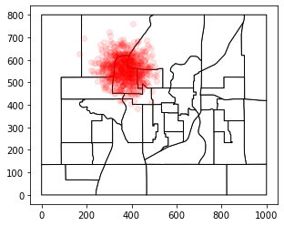
[42]:
#### Group 2 Retail Background
n_retail_jobs_2 = int(total_employment * 0.1)
mean = [600, 250,]
cov = [
[22000, 0],
[0, 22000],
]
x, y = np.random.multivariate_normal(mean, cov, n_retail_jobs_2).T
retail_locations_2 = pd.DataFrame.from_dict({
'X':x,
'Y':y,
})
retail_locations_2 = gpd.GeoDataFrame(
retail_locations_2,
geometry=gpd.points_from_xy(retail_locations_2.X, retail_locations_2.Y),
crs={},
)
retail_locations_2 = gpd.sjoin(retail_locations_2, taz_shape[['TAZ','geometry']], how='inner', op='within')
ax =taz_shape.plot(edgecolor='k', color='w')
retail_locations_2.plot(ax=ax, color='red', alpha=0.1)
[42]:
<matplotlib.axes._subplots.AxesSubplot at 0x7fb061c80b10>
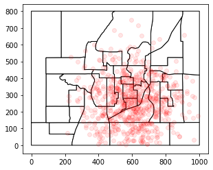
[43]:
#### Group 3 Downtown Locus
n_other_jobs_1 = int(total_employment * 0.5)
mean = [300, 250,]
cov = [
[22000, 0],
[0, 22000],
]
x, y = np.random.multivariate_normal(mean, cov, n_other_jobs_1).T
other_locations_1 = pd.DataFrame.from_dict({
'X':x,
'Y':y,
})
other_locations_1 = gpd.GeoDataFrame(
other_locations_1,
geometry=gpd.points_from_xy(other_locations_1.X, other_locations_1.Y),
crs={},
)
other_locations_1 = gpd.sjoin(other_locations_1, taz_shape[['TAZ','geometry']], how='inner', op='within')
ax =taz_shape.plot(edgecolor='k', color='w')
other_locations_1.plot(ax=ax, color='red', alpha=0.1)
[43]:
<matplotlib.axes._subplots.AxesSubplot at 0x7fb011432710>
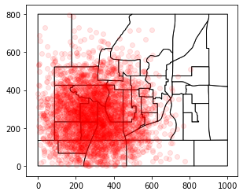
[44]:
#### Group 4 Background
n_other_jobs_2 = total_employment - len(other_locations_1) - len(retail_locations_2) - len(retail_locations_1)
x2 = np.random.random(n_other_jobs_2)*1000
y2 = np.random.random(n_other_jobs_2)*800
other_locations_2 = pd.DataFrame.from_dict({
'X':x2,
'Y':y2,
})
other_locations_2 = gpd.GeoDataFrame(
other_locations_2,
geometry=gpd.points_from_xy(other_locations_2.X, other_locations_2.Y),
crs={},
)
other_locations_2 = gpd.sjoin(other_locations_2, taz_shape[['TAZ','geometry']], how='inner', op='within')
ax =taz_shape.plot(edgecolor='k', color='w')
other_locations_2.plot(ax=ax, color='red', alpha=0.1);
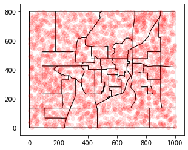
[45]:
## Merge all employment
retail_locations_1['JOBTYPE'] = 'retail'
retail_locations_2['JOBTYPE'] = 'retail'
other_locations_1['JOBTYPE'] = 'nonretail'
other_locations_2['JOBTYPE'] = 'nonretail'
job_location = pd.concat([retail_locations_1,retail_locations_2,other_locations_1,other_locations_2])
job_location = job_location.reset_index(drop=True)
job_location['JOBTYPE'] = job_location['JOBTYPE'].astype('category')
ax =taz_shape.plot(edgecolor='k', color='w')
job_location.plot(ax=ax, color='red', alpha=0.1);
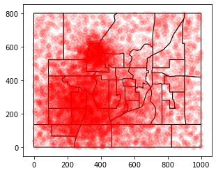
[46]:
taz_employment = job_location.groupby(['TAZ','JOBTYPE']).size().unstack().fillna(0).astype(int)
taz_employment.rename({'retail':'RETAIL_EMP', 'nonretail':'NONRETAIL_EMP'}, axis=1, inplace=True)
[47]:
taz_employment['TOTAL_EMP'] = taz_employment['NONRETAIL_EMP'] + taz_employment['RETAIL_EMP']
[48]:
taz_employment.columns.name = None
[49]:
taz_employment.head()
[49]:
| NONRETAIL_EMP | RETAIL_EMP | TOTAL_EMP | |
|---|---|---|---|
| TAZ | |||
| 1 | 118 | 340 | 458 |
| 2 | 91 | 0 | 91 |
| 3 | 197 | 2 | 199 |
| 4 | 277 | 8 | 285 |
| 5 | 44 | 13 | 57 |
[50]:
# Save
taz_employment.to_csv(larch.exampville._files(seed).employment)
[ ]:
Network Graph¶
[51]:
from itertools import tee
def pairwise(iterable):
"s -> (s0,s1), (s1,s2), (s2, s3), ..."
a, b = tee(iterable)
next(b, None)
return zip(a, b)
[52]:
highway_route = [12,2,10,23,24,26,27,39,11]
transit_line = [39,6,36,25,29,17,31,14,34]
[53]:
speed_road = 3 # minutes per mile
speed_highway = 1 # minutes per mile
speed_train = 1.2 # minutes per mile
speed_walk = 20 # minutes per mile
speed_bike = 5 # minutes per mile
[54]:
g = nx.DiGraph()
for index, zone in taz_shape.iterrows():
# get 'not disjoint' countries
neighbors = taz_shape[~taz_shape.geometry.disjoint(zone.geometry)].TAZ.tolist()
neighborc = taz_shape[~taz_shape.geometry.disjoint(zone.geometry)].geometry.centroid.tolist()
# add names of neighbors as NEIGHBORS value
for name, cent in zip(neighbors,neighborc):
if zone.TAZ != name:
otaz, dtaz = int(zone.TAZ), int(name)
distance = (zone.geometry.centroid.distance(cent)) / 100
if otaz in highway_route and dtaz in highway_route:
cartime = distance * speed_highway
else:
cartime = distance * speed_road
if otaz in [25,36,3]:
cartime += 3 # congestion
if dtaz in [25,36,3]:
cartime += 5 # congestion
if otaz in transit_line and dtaz in transit_line:
transit_ivtt = distance * speed_train
transit_ovtt = 999999
transit_time = transit_ivtt
else:
transit_ivtt = 999999
transit_ovtt = distance * speed_walk
transit_time = transit_ovtt
g.add_edge(
otaz, dtaz,
distance=distance, cartime=cartime,
transit_ovtt=transit_ovtt,
transit_ivtt=transit_ivtt,
transit_time=transit_time,
)
[55]:
taz_shape.index = taz_shape.TAZ
[56]:
centroids = taz_shape.centroid
[57]:
## Highway Map
ax = taz_shape.plot(edgecolor='w')
nx.draw_networkx_edges(
g,
pos={i:p.coords[0] for i,p in centroids.iteritems()},
ax=ax,
arrows=False,
edgelist = list(pairwise(highway_route))
);
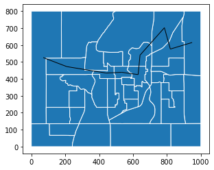
[58]:
## Transit Map
ax = taz_shape.plot(edgecolor='w')
nx.draw_networkx_edges(
g,
pos={i:p.coords[0] for i,p in centroids.iteritems()},
ax=ax,
arrows=False,
edgelist = list(pairwise(transit_line))
);
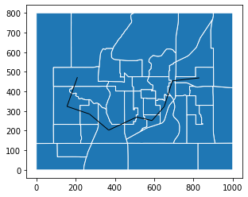
[59]:
# Skim walk times
WALKDIST = np.zeros([40,40])
for otaz in range(1,41):
shortpaths = nx.shortest_path_length(g, source=otaz, weight='distance')
for dtaz,t in shortpaths.items():
WALKDIST[otaz-1,dtaz-1] = t
# Intrazonal
WALKDIST[otaz-1,otaz-1] = np.sqrt(taz_shape.loc[otaz,'geometry'].area)/100
print(WALKDIST)
[[1.26008879 5.33674896 4.58318093 ... 6.18954756 1.69554975 2.37320583]
[5.33674896 1.58559083 7.10162147 ... 3.58697088 6.58003239 4.68712856]
[4.58318093 7.10162147 0.84878748 ... 6.03594579 3.16473549 2.58607677]
...
[6.18954756 3.58697088 6.03594579 ... 1.47478351 7.36821732 4.27530036]
[1.69554975 6.58003239 3.16473549 ... 7.36821732 1.52806696 3.1778055 ]
[2.37320583 4.68712856 2.58607677 ... 4.27530036 3.1778055 0.93934102]]
[ ]:
[60]:
# Skim car times
CARTIME = np.zeros([40,40])
CARDIST = np.zeros([40,40])
for otaz in range(1,41):
shortpaths = nx.shortest_path(g, source=otaz, weight='cartime')
for dtaz,pth in shortpaths.items():
cartime, cardist = 0,0
for i,j in pairwise(pth):
cartime += g.edges[i,j]['cartime']
cardist += g.edges[i,j]['distance']
CARTIME[otaz-1,dtaz-1] = cartime
CARDIST[otaz-1,dtaz-1] = cardist
# Intrazonal
intrazonal_dist = np.sqrt(taz_shape.loc[otaz,'geometry'].area)/100
CARTIME[otaz-1,otaz-1] = intrazonal_dist * speed_road
CARDIST[otaz-1,otaz-1] = intrazonal_dist
if otaz in [25,36,3]:
CARTIME[otaz-1,otaz-1] += 5 # congestion
print(CARTIME)
[[ 3.78026636 7.55074623 20.03817767 ... 14.84435807 5.08664924
7.1196175 ]
[ 7.55074623 4.75677248 21.53156082 ... 10.76091265 6.58003239
7.46190167]
[18.03817767 19.53156082 7.54636244 ... 26.82517266 12.95152843
18.69703682]
...
[14.84435807 10.76091265 28.82517266 ... 4.42435054 13.87364423
12.82590109]
[ 5.08664924 6.58003239 14.95152843 ... 13.87364423 4.58420087
6.14890366]
[ 7.1196175 7.46190167 20.69703682 ... 12.82590109 6.14890366
2.81802305]]
[61]:
## Skim Transit times
from itertools import tee
def pairwise(iterable):
"s -> (s0,s1), (s1,s2), (s2, s3), ..."
a, b = tee(iterable)
next(b, None)
return zip(a, b)
TRANSIT_IVTT = np.zeros([40,40])
TRANSIT_OVTT = np.zeros([40,40])
for otaz in range(1,41):
shortpaths = nx.shortest_path(g, source=otaz, weight='transit_time')
for dtaz,pth in shortpaths.items():
ivtt, ovtt = 0,0
for i,j in pairwise(pth):
if g.edges[i,j]['transit_ivtt'] < 999999:
ivtt += g.edges[i,j]['transit_ivtt']
else:
ovtt += g.edges[i,j]['transit_ovtt']
if ovtt == 0:
ovtt = np.sqrt(taz_shape.loc[otaz,'geometry'].area)/150 + np.sqrt(taz_shape.loc[dtaz,'geometry'].area)/150
TRANSIT_IVTT[otaz-1,dtaz-1] = ivtt
TRANSIT_OVTT[otaz-1,dtaz-1] = ovtt
[62]:
print(TRANSIT_IVTT[:5,:5])
[[ 0. 12.16681923 3.34322095 0. 12.16681923]
[12.16681923 0. 7.28835487 8.82359828 0. ]
[ 3.34322095 7.28835487 0. 0. 7.28835487]
[ 0. 8.82359828 0. 0. 8.82359828]
[12.16681923 0. 7.28835487 8.82359828 0. ]]
[63]:
print(TRANSIT_IVTT[5:10,5:10])
[[ 0. 10.27128369 4.87262088 1.89553554 10.27128369]
[10.27128369 0. 1.65255376 12.16681923 0. ]
[ 4.87262088 1.65255376 0. 0. 0. ]
[ 1.89553554 12.16681923 0. 0. 0. ]
[10.27128369 0. 0. 0. 0. ]]
[64]:
print(TRANSIT_OVTT[:5,:5])
[[ 1.68011838 55.40770608 53.31126782 54.30474188 51.92986575]
[55.40770608 2.1141211 42.40834339 41.86677092 39.51558199]
[53.31126782 42.40834339 1.13171664 39.77033266 38.93050306]
[54.30474188 41.86677092 39.77033266 1.59494151 38.38893059]
[51.92986575 39.51558199 38.93050306 38.38893059 1.33312576]]
[65]:
nx.shortest_path(g, source=30, weight='transit_time')[17]
[65]:
[30, 17]
[66]:
TRANSIT_OVTT[30-1,17-1]
[66]:
13.623549779792938
[67]:
print(TRANSIT_OVTT[5:10,5:10])
[[ 2.13185101 44.79634199 52.86833727 45.94660431 47.64017297]
[44.79634199 2.23727869 96.67959495 90.7429463 92.43651496]
[52.86833727 96.67959495 1.28229674 57.83865222 79.11952302]
[45.94660431 90.7429463 57.83865222 3.35766701 97.40276959]
[47.64017297 92.43651496 79.11952302 97.40276959 2.30316209]]
[68]:
if os.path.exists(larch.exampville.files.skims):
os.remove(larch.exampville.files.skims)
[69]:
## Assemble Skims into an OMX File
skims_omx = larch.OMX(larch.exampville._files(seed).skims, mode='w')
[70]:
skims_omx.add_matrix('TRANSIT_IVTT', TRANSIT_IVTT)
skims_omx.add_matrix('TRANSIT_OVTT', TRANSIT_OVTT)
skims_omx.add_matrix('TRANSIT_FARE', (TRANSIT_IVTT>0)*2.50)
skims_omx.add_matrix('WALK_DIST', WALKDIST)
skims_omx.add_matrix('WALK_TIME', WALKDIST * speed_walk)
skims_omx.add_matrix('BIKE_TIME', WALKDIST * speed_bike)
skims_omx.add_matrix('AUTO_TIME', CARTIME)
skims_omx.add_matrix('AUTO_COST', CARDIST * 0.35)
skims_omx.add_matrix('AUTO_DIST', CARDIST);
[71]:
taz_ids = np.arange(nZones)+1
skims_omx.add_lookup('TAZ_ID', taz_ids);
[72]:
taz_ids = np.arange(nZones)+1
taz_area_types = np.full(40, 'SUB')
taz_area_types[np.in1d(taz_ids, zones_cbd)] = 'CBD'
taz_area_types[np.in1d(taz_ids, zones_urb)] = 'URB'
[73]:
skims_omx.add_lookup('TAZ_AREA_TYPE', taz_area_types);
[74]:
skims_omx.close()
[75]:
skims_omx = larch.OMX(larch.exampville._files(seed).skims, mode='r')
Tours¶
[76]:
# Tour Modes
DA = 1
SR = 2
Walk = 3
Bike = 4
Transit = 5
[77]:
## Tours
n_TOUR = PERntours.sum()
TOURid = np.arange(n_TOUR, dtype=np.int64)
TOURper = np.zeros(n_TOUR, dtype=np.int64)
TOURperidx = np.zeros(n_TOUR, dtype=np.int64)
TOURhh = np.zeros(n_TOUR, dtype=np.int64)
TOURhhidx = np.zeros(n_TOUR, dtype=np.int64)
TOURdtaz = np.zeros(n_TOUR, dtype=np.int64)
TOURstops = np.zeros(n_TOUR, dtype=np.int64)
TOURmode = np.zeros(n_TOUR, dtype=np.int64)
TOURpurpose = np.zeros(n_TOUR, dtype=np.int64)
# Work tours, then other tours
n2 = 0
for n1 in range(n_PER):
TOURper[n2:(n2 + PERntours[n1])] = PERid[n1]
TOURperidx[n2:(n2 + PERntours[n1])] = PERidx[n1]
TOURhh[n2:(n2 + PERntours[n1])] = PERhhid[n1]
TOURhhidx[n2:(n2 + PERntours[n1])] = PERhhidx[n1]
TOURpurpose[n2:(n2 + PERnworktours[n1])] = 1
TOURpurpose[(n2 + PERnworktours[n1]):(n2 + PERntours[n1])] = 2
TOURstops[n2:(n2 + PERnworktours[n1])] = np.random.choice(
[0, 1, 2, 3],
size=[PERnworktours[n1], ],
replace=True,
p=[0.8, 0.1, 0.05, 0.05],
).astype(np.int64)
TOURstops[(n2 + PERnworktours[n1]):(n2 + PERntours[n1])] = np.random.choice(
[0, 1, 2, 3, 4, 5],
size=[PERntours[n1]-PERnworktours[n1], ],
replace=True,
p=[0.4, 0.15, 0.15, 0.15, 0.1, 0.05],
).astype(np.int64)
n2 += PERntours[n1]
[78]:
PERnworktours[:5], PERworks[:5], PERid[:5]
[78]:
(array([1, 1, 1, 0, 1]),
array([1, 1, 1, 0, 1]),
array([60000, 60001, 60002, 60003, 60004]))
[79]:
#### Utility by mode to various destinations
nameModes = ['DA', 'SR', 'Walk', 'Bike', 'Transit']
mDA = 0
mSR = 1
mWA = 2
mBI = 3
mTR = 4
nModes = len(nameModes)
nModeNests = 3
paramCOST = -0.312
paramTIME = -0.123
paramNMTIME = -0.246
paramDIST = -0.00357
paramLNDIST = -0.00642
paramMUcar = 0.5
paramMUnon = 0.75
paramMUmot = 0.8
paramMUtop = 1.0
[80]:
zone_retail = taz_employment.RETAIL_EMP
zone_nonretail = taz_employment.NONRETAIL_EMP
[81]:
Util = np.zeros([n_TOUR, nZones, nModes])
for n in range(n_TOUR):
# Mode
otazi = HH.HOMETAZ[TOURhhidx[n]] - 1
Util[n, :, mDA] += (
+ skims_omx.AUTO_TIME[otazi, :] * paramTIME
+ skims_omx.AUTO_COST[otazi, :] * paramCOST
)
if HH.INCOME[TOURhhidx[n]] >= 75000:
Util[n, :, mDA] += 1.0
Util[n, :, mTR] -= 0.5
Util[n, :, mSR] += (
+ skims_omx.AUTO_TIME[otazi, :] * paramTIME
- 1.0
+ skims_omx.AUTO_COST[otazi, :] * paramCOST * 0.5
)
Util[n, :, mWA] += 3.0 + skims_omx.WALK_TIME[otazi, :] * paramNMTIME
Util[n, :, mBI] += -2.25 + skims_omx.BIKE_TIME[otazi, :] * paramNMTIME
Util[n, :, mTR] += (
+ 1.5
+ skims_omx.TRANSIT_IVTT[otazi, :] * paramTIME
+ skims_omx.TRANSIT_OVTT[otazi, :] * paramTIME * 2.2
+ skims_omx.TRANSIT_FARE[otazi, :] * paramCOST
)
Util[n, :, mDA] += 0.33 * TOURstops[n] - 0.1
# Destination
Util[n, :, :] += skims_omx.AUTO_DIST[:][otazi, :, None] * paramDIST + np.log1p(skims_omx.AUTO_DIST[:][otazi, :, None]) * paramLNDIST
if HH.INCOME[TOURhhidx[n]] <= 50000:
Util[n, :, :] += 0.75 * np.log(zone_retail * 2.71828 + zone_nonretail)[:, None]
else:
Util[n, :, :] += 0.75 * np.log(zone_retail + zone_nonretail * 2.71828)[:, None]
# flog('Util[n,:,:] ...')
# flog('{}',Util[n,:,:])
# Unavails
if PERage[TOURperidx[n]] < 16:
Util[n, :, mDA] = -np.inf
Util[n, skims_omx.TRANSIT_FARE[otazi, :] <= 0, mTR] = -np.inf
Util[n, skims_omx.WALK_TIME[otazi, :] >= 60, mWA] = -np.inf
Util[n, skims_omx.BIKE_TIME[otazi, :] >= 60, mBI] = -np.inf
[82]:
from numpy import log, exp
[83]:
CPr_car = np.zeros([n_TOUR, nZones, 2]) # [DA,SR]
CPr_non = np.zeros([n_TOUR, nZones, 2]) # [WA,BI]
CPr_mot = np.zeros([n_TOUR, nZones, 2]) # [TR,Car]
CPr_top = np.zeros([n_TOUR, nZones, 2]) # [Non,Mot]
NLS_car = np.zeros([n_TOUR, nZones, ])
NLS_non = np.zeros([n_TOUR, nZones, ])
NLS_mot = np.zeros([n_TOUR, nZones, ])
MLS_top = np.zeros([n_TOUR, nZones, ]) # Mode choice logsum
DLS_top = np.zeros([n_TOUR, ]) # Dest choice logsum
Pr_modes = np.zeros([n_TOUR, nZones, nModes])
Pr_dest = np.zeros([n_TOUR, nZones])
with np.errstate(divide='ignore', invalid='ignore'):
for n in range(n_TOUR):
NLS_car[n, :] = paramMUcar * log(np.exp(Util[n, :, mDA] / paramMUcar) + exp(Util[n, :, mSR] / paramMUcar))
NLS_non[n, :] = paramMUnon * log(np.exp(Util[n, :, mWA] / paramMUnon) + exp(Util[n, :, mBI] / paramMUnon))
NLS_mot[n, :] = paramMUmot * log(np.exp(NLS_car[n, :] / paramMUmot) + exp(Util[n, :, mTR] / paramMUmot))
MLS_top[n, :] = log(exp(NLS_non[n, :]) + exp(NLS_mot[n, :]))
DLS_top[n] = log(np.sum(exp(MLS_top[n, :])))
Pr_dest[n, :] = exp(MLS_top[n, :] - DLS_top[n])
CPr_top[n, :, 0] = exp((NLS_non[n, :] - MLS_top[n, :]) / paramMUtop)
CPr_top[n, :, 1] = exp((NLS_mot[n, :] - MLS_top[n, :]) / paramMUtop)
CPr_mot[n, :, 0] = exp((Util[n, :, mTR] - NLS_mot[n, :]) / paramMUmot)
CPr_mot[n, :, 1] = exp((NLS_car[n, :] - NLS_mot[n, :]) / paramMUmot)
CPr_non[n, :, 0] = exp((Util[n, :, mWA] - NLS_non[n, :]) / paramMUnon)
CPr_non[n, :, 1] = exp((Util[n, :, mBI] - NLS_non[n, :]) / paramMUnon)
CPr_car[n, :, 0] = exp((Util[n, :, mDA] - NLS_car[n, :]) / paramMUcar)
CPr_car[n, :, 1] = exp((Util[n, :, mSR] - NLS_car[n, :]) / paramMUcar)
Pr_modes[n, :, mTR] = CPr_mot[n, :, 0] * CPr_top[n, :, 1] * Pr_dest[n, :]
Pr_modes[n, :, mWA] = CPr_non[n, :, 0] * CPr_top[n, :, 0] * Pr_dest[n, :]
Pr_modes[n, :, mBI] = CPr_non[n, :, 1] * CPr_top[n, :, 0] * Pr_dest[n, :]
Pr_modes[n, :, mDA] = CPr_car[n, :, 0] * CPr_mot[n, :, 1] * CPr_top[n, :, 1] * Pr_dest[n, :]
Pr_modes[n, :, mSR] = CPr_car[n, :, 1] * CPr_mot[n, :, 1] * CPr_top[n, :, 1] * Pr_dest[n, :]
Pr_modes[np.isnan(Pr_modes)] = 0
[84]:
## Choices
for n in range(n_TOUR):
try:
ch = np.random.choice(nModes * nZones, replace=True, p=Pr_modes[n, :, :].ravel())
except:
print("total prob = {}", Pr_modes[n, :, :].sum())
raise
dtazi = ch // nModes
modei = ch - (dtazi * nModes)
TOURdtaz[n] = dtazi + 1
TOURmode[n] = modei + 1
[85]:
f_tour = pd.DataFrame.from_dict(
dict([
('TOURID', TOURid),
('HHID', TOURhh),
('PERSONID', TOURper),
('DTAZ', TOURdtaz),
('TOURMODE', TOURmode),
('TOURPURP', TOURpurpose),
('N_STOPS', TOURstops),
])
)
# f_tour_filename = os.path.join(directory, 'exampville_tours.csv')
# f_tour.to_csv(f_tour_filename)
[86]:
f_tour.set_index('TOURID', inplace=True)
[ ]:
[87]:
DA = 1
SR = 2
Walk = 3
Bike = 4
Transit = 5
[88]:
dfs = larch.DataFrames(
co=f_tour,
alt_codes=[DA,SR,Walk,Bike,Transit],
alt_names=['DA','SR','Walk','Bike','Transit'],
ch_name='TOURMODE',
)
[89]:
dfs.data_ch
[89]:
| 1 | 2 | 3 | 4 | 5 | |
|---|---|---|---|---|---|
| TOURID | |||||
| 0 | 1.0 | 0.0 | 0.0 | 0.0 | 0.0 |
| 1 | 1.0 | 0.0 | 0.0 | 0.0 | 0.0 |
| 2 | 0.0 | 1.0 | 0.0 | 0.0 | 0.0 |
| 3 | 1.0 | 0.0 | 0.0 | 0.0 | 0.0 |
| 4 | 1.0 | 0.0 | 0.0 | 0.0 | 0.0 |
| ... | ... | ... | ... | ... | ... |
| 20734 | 1.0 | 0.0 | 0.0 | 0.0 | 0.0 |
| 20735 | 0.0 | 0.0 | 0.0 | 0.0 | 1.0 |
| 20736 | 1.0 | 0.0 | 0.0 | 0.0 | 0.0 |
| 20737 | 1.0 | 0.0 | 0.0 | 0.0 | 0.0 |
| 20738 | 0.0 | 1.0 | 0.0 | 0.0 | 0.0 |
20739 rows × 5 columns
[90]:
dfs.choice_avail_summary()
[90]:
| name | chosen | available | chosen but not available | |
|---|---|---|---|---|
| 1 | DA | 16469.0 | None | 16469.0 |
| 2 | SR | 2511.0 | None | 2511.0 |
| 3 | Walk | 525.0 | None | 525.0 |
| 4 | Bike | 174.0 | None | 174.0 |
| 5 | Transit | 1060.0 | None | 1060.0 |
| < Total All Alternatives > | 20739.0 | 20739.0 |
Roll Ups¶
[91]:
# Trips Per Person
f_tour['N_TRIPS'] = 2+f_tour['N_STOPS']
[92]:
f_tour['N_TRIPS_HBW'] = (f_tour.TOURPURP==1)*2 - ((f_tour.TOURPURP==1)&(f_tour.N_STOPS>0))
f_tour['N_TRIPS_HBO'] = ((f_tour.TOURPURP==1)*2 - ((f_tour.TOURPURP==1)&(f_tour.N_STOPS>0))==1) + (f_tour.TOURPURP==2)*2
f_tour['N_TRIPS_NHB'] = f_tour['N_TRIPS'] - f_tour['N_TRIPS_HBW'] - f_tour['N_TRIPS_HBO']
[93]:
f_tour
[93]:
| HHID | PERSONID | DTAZ | TOURMODE | TOURPURP | N_STOPS | N_TRIPS | N_TRIPS_HBW | N_TRIPS_HBO | N_TRIPS_NHB | |
|---|---|---|---|---|---|---|---|---|---|---|
| TOURID | ||||||||||
| 0 | 50000 | 60000 | 22 | 1 | 1 | 0 | 2 | 2 | 0 | 0 |
| 1 | 50000 | 60001 | 4 | 1 | 1 | 0 | 2 | 2 | 0 | 0 |
| 2 | 50000 | 60001 | 10 | 2 | 2 | 0 | 2 | 0 | 2 | 0 |
| 3 | 50000 | 60002 | 20 | 1 | 1 | 0 | 2 | 2 | 0 | 0 |
| 4 | 50000 | 60002 | 20 | 1 | 2 | 1 | 3 | 0 | 2 | 1 |
| ... | ... | ... | ... | ... | ... | ... | ... | ... | ... | ... |
| 20734 | 54998 | 72343 | 40 | 1 | 1 | 0 | 2 | 2 | 0 | 0 |
| 20735 | 54998 | 72344 | 36 | 5 | 2 | 1 | 3 | 0 | 2 | 1 |
| 20736 | 54999 | 72345 | 5 | 1 | 1 | 3 | 5 | 1 | 1 | 3 |
| 20737 | 54999 | 72346 | 28 | 1 | 2 | 4 | 6 | 0 | 2 | 4 |
| 20738 | 54999 | 72347 | 11 | 2 | 2 | 1 | 3 | 0 | 2 | 1 |
20739 rows × 10 columns
[94]:
PER.index = PER.PERSONID
for ttype in [
'N_TRIPS',
'N_TRIPS_HBW',
'N_TRIPS_HBO',
'N_TRIPS_NHB',
]:
PER[ttype] = f_tour.groupby('PERSONID')[ttype].sum()
PER[ttype] = PER[ttype].fillna(0).astype(int)
[95]:
PER
[95]:
| PERSONID | HHID | HHIDX | AGE | WORKS | N_VEHICLES | INCOME | N_WORK_TOURS | N_OTHER_TOURS | N_TOURS | N_TRIPS | N_TRIPS_HBW | N_TRIPS_HBO | N_TRIPS_NHB | |
|---|---|---|---|---|---|---|---|---|---|---|---|---|---|---|
| PERSONID | ||||||||||||||
| 60000 | 60000 | 50000 | 0 | 33 | 1 | 1 | 6026.000000 | 1 | 0 | 1 | 2 | 2 | 0 | 0 |
| 60001 | 60001 | 50000 | 0 | 27 | 1 | 1 | 6026.000000 | 1 | 1 | 2 | 4 | 2 | 2 | 0 |
| 60002 | 60002 | 50000 | 0 | 31 | 1 | 1 | 6026.000000 | 1 | 1 | 2 | 5 | 2 | 2 | 1 |
| 60003 | 60003 | 50000 | 0 | 81 | 0 | 1 | 6026.000000 | 0 | 2 | 2 | 4 | 0 | 4 | 0 |
| 60004 | 60004 | 50001 | 1 | 39 | 1 | 0 | 30538.000000 | 1 | 0 | 1 | 4 | 1 | 1 | 2 |
| ... | ... | ... | ... | ... | ... | ... | ... | ... | ... | ... | ... | ... | ... | ... |
| 72344 | 72344 | 54998 | 4998 | 11 | 0 | 1 | 17409.785665 | 0 | 1 | 1 | 3 | 0 | 2 | 1 |
| 72345 | 72345 | 54999 | 4999 | 35 | 1 | 2 | 23041.675567 | 1 | 0 | 1 | 5 | 1 | 1 | 3 |
| 72346 | 72346 | 54999 | 4999 | 20 | 0 | 2 | 23041.675567 | 0 | 1 | 1 | 6 | 0 | 2 | 4 |
| 72347 | 72347 | 54999 | 4999 | 30 | 0 | 2 | 23041.675567 | 0 | 1 | 1 | 3 | 0 | 2 | 1 |
| 72348 | 72348 | 54999 | 4999 | 82 | 0 | 2 | 23041.675567 | 0 | 0 | 0 | 0 | 0 | 0 | 0 |
12349 rows × 14 columns
[96]:
HH.index = HH.HHID
for ttype in [
'N_TRIPS',
'N_TRIPS_HBW',
'N_TRIPS_HBO',
'N_TRIPS_NHB',
]:
HH[ttype] = PER.groupby('HHID')[ttype].sum()
HH[ttype] = HH[ttype].fillna(0).astype(int)
[97]:
HH['N_WORKERS'] = PER.groupby('HHID').WORKS.sum()
HH['N_WORKERS'] = HH.N_WORKERS.fillna(0).astype(int)
[98]:
HH['N_WORKERS'].statistics(discrete=True)
[98]:
| key | value |
|---|---|
| n | 5000 |
| minimum | 0 |
| maximum | 8 |
| median | 1.0 |
| histogram | |
| mean | 1.4788 |
| stdev | 1.0516418401718335 |
| zeros | 729 |
| positives | 4271 |
| negatives | 0 |
| nonzero_minimum | 1 |
| nonzero_maximum | 8 |
| nonzero_mean | 1.7312104893467573 |
| nonzero_stdev | 0.9261453313852304 |
[99]:
PER.info()
<class 'pandas.core.frame.DataFrame'>
Int64Index: 12349 entries, 60000 to 72348
Data columns (total 14 columns):
# Column Non-Null Count Dtype
--- ------ -------------- -----
0 PERSONID 12349 non-null int64
1 HHID 12349 non-null int64
2 HHIDX 12349 non-null int64
3 AGE 12349 non-null int64
4 WORKS 12349 non-null int64
5 N_VEHICLES 12349 non-null int64
6 INCOME 12349 non-null float64
7 N_WORK_TOURS 12349 non-null int64
8 N_OTHER_TOURS 12349 non-null int64
9 N_TOURS 12349 non-null int64
10 N_TRIPS 12349 non-null int64
11 N_TRIPS_HBW 12349 non-null int64
12 N_TRIPS_HBO 12349 non-null int64
13 N_TRIPS_NHB 12349 non-null int64
dtypes: float64(1), int64(13)
memory usage: 1.4 MB
[100]:
w, b1, b2 = np.histogram2d(
PER.N_VEHICLES,
PER.N_WORK_TOURS,
bins=[
np.array([0,1,2,3,4,5,6,7])-0.5,
[0,1,2,3,4,5,6,7,8,9,10,12,14,16],
],
)
[101]:
ww = pd.DataFrame(
w,
index=[0,1,2,3,4,5,6],
columns=[f"{i}" for i,j in zip(b2[:-1], b2[1:])],
)
ww.T.div(ww.T.sum(0)).T
[101]:
| 0 | 1 | 2 | 3 | 4 | 5 | 6 | 7 | 8 | 9 | 10 | 12 | 14 | |
|---|---|---|---|---|---|---|---|---|---|---|---|---|---|
| 0 | 0.556334 | 0.432884 | 0.007547 | 0.003235 | 0.0 | 0.0 | 0.0 | 0.0 | 0.0 | 0.0 | 0.0 | 0.0 | 0.0 |
| 1 | 0.506141 | 0.428545 | 0.049311 | 0.016003 | 0.0 | 0.0 | 0.0 | 0.0 | 0.0 | 0.0 | 0.0 | 0.0 | 0.0 |
| 2 | 0.494772 | 0.388196 | 0.103204 | 0.013828 | 0.0 | 0.0 | 0.0 | 0.0 | 0.0 | 0.0 | 0.0 | 0.0 | 0.0 |
| 3 | 0.447873 | 0.344454 | 0.178482 | 0.029191 | 0.0 | 0.0 | 0.0 | 0.0 | 0.0 | 0.0 | 0.0 | 0.0 | 0.0 |
| 4 | 0.465909 | 0.278409 | 0.210227 | 0.045455 | 0.0 | 0.0 | 0.0 | 0.0 | 0.0 | 0.0 | 0.0 | 0.0 | 0.0 |
| 5 | 0.451883 | 0.284519 | 0.230126 | 0.033473 | 0.0 | 0.0 | 0.0 | 0.0 | 0.0 | 0.0 | 0.0 | 0.0 | 0.0 |
| 6 | 0.475000 | 0.266667 | 0.191667 | 0.066667 | 0.0 | 0.0 | 0.0 | 0.0 | 0.0 | 0.0 | 0.0 | 0.0 | 0.0 |
[102]:
import seaborn as sns
sns.heatmap(
data=pd.DataFrame(
w,
index=[0,1,2,3,4,5,6],
columns=[f"{i}" for i,j in zip(b2[:-1], b2[1:])],
),
annot=True,
fmt=".0f",
)
[102]:
<matplotlib.axes._subplots.AxesSubplot at 0x7fb020b79e50>

[103]:
hh_means = HH.groupby('HOMETAZ')[['INCOME', 'N_VEHICLES', 'HHSIZE',
'N_TRIPS', 'N_TRIPS_HBW', 'N_TRIPS_HBO', 'N_TRIPS_NHB',
'N_WORKERS']].mean().add_prefix('MEAN_')
[104]:
hh_sums = HH.groupby('HOMETAZ')[['N_VEHICLES', 'HHSIZE',
'N_TRIPS', 'N_TRIPS_HBW', 'N_TRIPS_HBO', 'N_TRIPS_NHB',
'N_WORKERS']].sum()
[105]:
hh_sums.rename(columns={
'HHSIZE':"TOTAL_POP",
'N_WORKERS':"TOTAL_WORKERS",
'N_VEHICLES':"TOTAL_VEHICLES",
'N_TRIPS':"TOTAL_TRIPS",
'N_TRIPS_HBW':'TOTAL_TRIPS_HBW',
'N_TRIPS_HBO':"TOTAL_TRIPS_HBO",
'N_TRIPS_NHB':"TOTAL_TRIPS_NHB",
}, inplace=True)
[106]:
taz_agg = pd.concat([hh_means, hh_sums], axis=1)
[107]:
taz_agg['N_HOUSEHOLDS'] = HH.groupby('HOMETAZ').size()
[108]:
taz_agg.index.name = "TAZ"
[109]:
# Drop income and n_veh from persons, they are hh attributes for our demos
PER.drop(['N_VEHICLES','INCOME'], axis=1, inplace=True)
Save¶
[110]:
HH.to_csv(larch.exampville._files(seed).hh, index=False)
PER.to_csv(larch.exampville._files(seed).person, index=False)
f_tour.to_csv(larch.exampville._files(seed).tour)
taz_agg.to_csv(larch.exampville._files(seed).demographics)
[111]:
larch.exampville._files(seed).demographics
[111]:
'../../data_warehouse/exampville_demographics.csv.gz'
[112]:
os.getcwd()
[112]:
'/Users/jeffnewman/Git/larch/larch/doc/example'
[ ]: